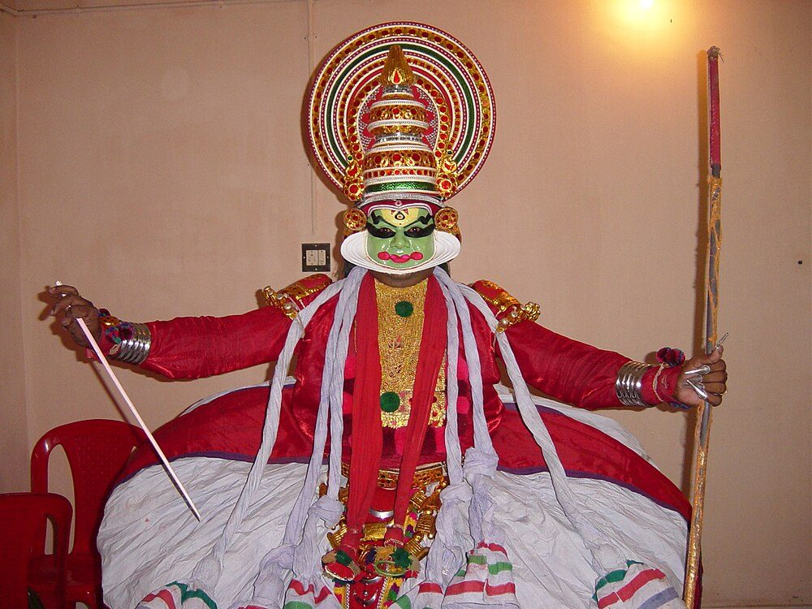
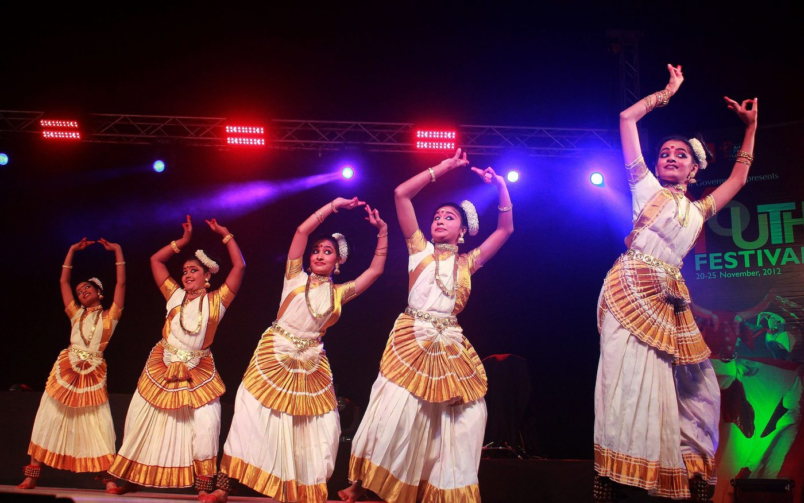
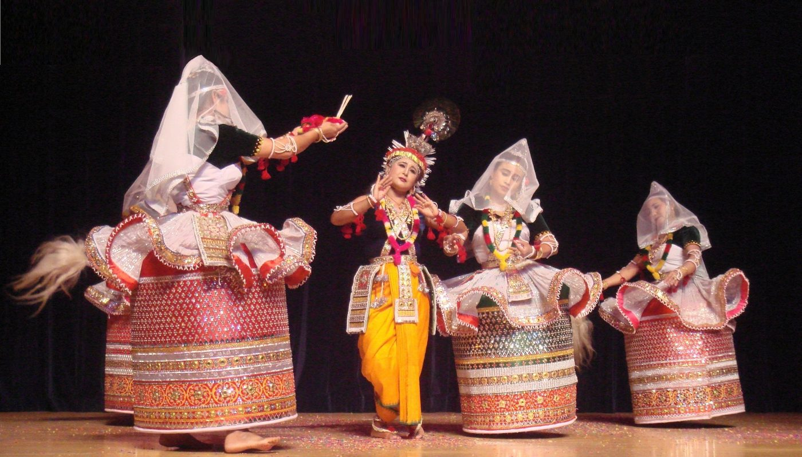
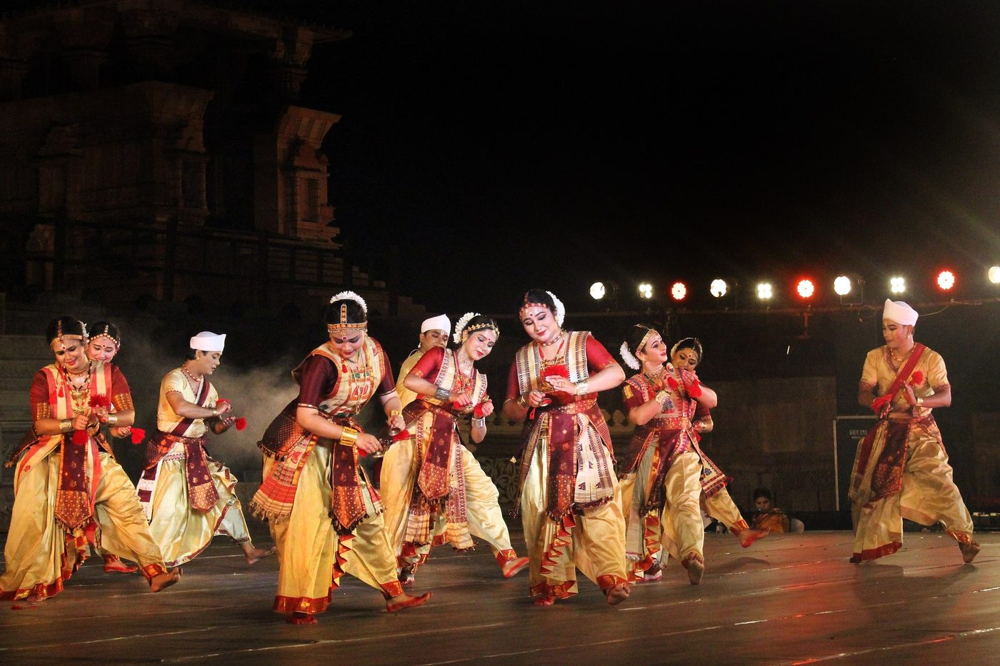

Chapter 18: Kathakaḷi, Mohiniyāṭṭam, Manipuri and Sattriya¶
A Kathakaḷi performance begins at dusk with drumming and lasts until dawn, lit in the old way by a single large oil lamp at the front of the stage; a Manipuri rāsa is danced in the courtyard of a temple to Kṛṣṇa. Four of the dance forms now recognised as classical come from two regions at opposite ends of India. From Kerala come Kathakaḷi, the dance-drama of epic heroes and demons performed by men in spectacular make-up and costume, and Mohiniyāṭṭam, a solo dance of women in white and gold. From the north-east come Manipuri, the devotional dance of the Meitei people of the Manipur valley, centred on the Rāsalīlā of Kṛṣṇa, and Sattriya, the dance of the Vaiṣṇava monasteries of Assam. The four forms have very different histories, but they share a close relation with religious institutions and with regional languages, music and martial traditions, and all four were reshaped in the twentieth century by new institutions and by their recognition as national “classical” arts.
18.1 Kerala: The Theatre of Kathakaḷi¶
18.1.1 Precursors¶
Kathakaḷi (Malayalam, “story-play”) took shape in the second half of the seventeenth century in the courts of central Kerala. It drew on several older traditions. Kūṭiyāṭṭam, the Kerala performance of Sanskrit drama by the Cākyār actors in temple theatres, provided a refined technique of acting with gesture and eye (Chapter 19). Kṛṣṇanāṭṭam, a cycle of eight plays on the life of Kṛṣṇa composed in Sanskrit in the mid-seventeenth century by Mānavēdan, the Zamorin of Calicut, and performed in the Guruvayur temple, provided a model of the dance-drama with elaborate costumes and masks. Rāmanāṭṭam, plays on the Rāmāyaṇa composed in Malayalam by the ruler of Kottarakkara, is traditionally regarded as Kathakaḷi’s direct ancestor: by using Malayalam songs instead of Sanskrit it made the action intelligible to wider audiences. The training and body of the actors owed much to the martial art of Kerala, kaḷarippayaṯṯu, practised by the Nāyar warriors from whom most of the actors came (Zarrilli 2000; Jones and Jones 1970).
18.1.2 Kṛṣṇanāṭṭam at Guruvayur¶
Kṛṣṇanāṭṭam survives as a temple art at the Kṛṣṇa temple of Guruvayur. Its text, Mānavēdan’s Sanskrit Kṛṣṇagīti, a song-poem modelled on Jayadeva’s Gītagovinda, is divided into eight plays covering the life of Kṛṣṇa from his birth to his ascent to heaven — Avatāram, Kāḷiyamardanam, Rāsakrīḍa, Kaṃsavadham, Svayaṃvaram, Bāṇayuddham, Vividavadham and Svargārohaṇam — which are performed on successive nights as offerings commissioned by devotees; by custom the cycle is not allowed to end with the death of Kṛṣṇa, and the first play is performed again after the last. The songs are sung by singers while the actors, who do not speak, dance and mime, some of them wearing painted wooden masks; the make-up and costumes resemble those of Kathakaḷi, which may have borrowed from them. Since the mid-twentieth century the troupe has been maintained by the temple administration, and performances take place in the temple precincts, where entry has been restricted to Hindus (Zarrilli 2000; Richmond et al. 1990).
18.1.3 The literature of Kathakaḷi¶
A Kathakaḷi play is called an āṭṭakkatha (“story for performance”). It consists of Sanskrit verses (ślokas) that narrate the action, sung by the singers, and Malayalam songs (padams) that give the words of the characters, which the actors render in gesture. Among the most celebrated authors are the Kottayam Tampurān (late seventeenth century), whose four plays on episodes of the Mahābhārata — Bakavadham, Kalyāṇasaugandhikam, Kirmīravadham and Nivātakavacakālakeyavadham — set standards for the form; Uṇṇāyi Vāriyar (eighteenth century), whose Naḷacaritam, in four parts, is regarded as the masterpiece of Kathakaḷi literature; and Irayimman Tampi (1783–1856), author of Kīcakavadham and other plays. Other favourites include Duryodhanavadham, Kirātam and Uttarāsvayaṃvaram. The repertoire is drawn from the epics and the Purāṇas, and its plays are performed in selected scenes rather than complete (Zarrilli 2000).
18.1.4 The Kalamandalam¶
By the early twentieth century Kathakaḷi had lost much of its royal and aristocratic patronage. The Malayalam poet Vallathol Narayana Menon (1878–1958), with Manakkulam Mukunda Raja, founded the Kerala Kalamandalam in 1930 to train actors and musicians in a residential school, recruiting the leading teachers of the time. The Kalamandalam standardised training, built a new audience for the form, sent troupes abroad and made Kathakaḷi internationally famous; it also, as critics have noted, tended to establish its own style as the norm at the expense of other lineages. Among the great actors of the twentieth century were Pattikkamthodi Ravunni Menon, a celebrated teacher, Kalamandalam Krishnan Nair, Kalamandalam Ramankutty Nair and Kalamandalam Gopi (Zarrilli 1984, 2000).
18.1.5 Caste and gender¶
Kathakaḷi was created in a hierarchical society. Its patrons were kings, Nampūtiri Brahmin landlords and temples; its actors were mostly Nāyar men; and its audiences, until the twentieth century, were largely drawn from the upper castes, since performances took place in temple and household compounds from which lower castes were excluded. Women did not act. In the twentieth century the Kalamandalam and other schools opened training to students of other communities, and women’s Kathakaḷi troupes have performed since the 1970s, but the form’s social history remains a subject of discussion in Kerala (Zarrilli 2000).
18.2 Kathakaḷi in Performance¶
18.2.1 Make-up and costume¶
Kathakaḷi’s make-up (vēṣam) classifies characters into types, each recognisable at once (Figure 18.1):
- Pacca
- (“green”): noble heroes and gods, such as Kṛṣṇa, Rāma, Arjuna and Naḷa, with green faces framed by a white ridge of rice paste and lime (cuṭṭi) that projects from the jaw.
- Katti
- (“knife”): arrogant and ambitious characters of royal rank, such as Rāvaṇa, Duryodhana and Kīcaka, with green faces marked by upturned red “knife” patterns on the cheeks and white knobs on the nose and forehead.
- Tāḍi
- (“beard”): the red-bearded (cuvanna tāḍi) evil and violent characters, such as Duśśāsana; the white-bearded (veḷḷa tāḍi), especially Hanumān; and the black-bearded (karutta tāḍi), forest-dwellers such as the hunter.
- Kari
- (“black”): demonesses and other savage characters.
- Minukku
- (“polished”): women, sages, Brahmins and messengers, with a simple yellowish-orange make-up.
The costume consists of a large, layered skirt over a padded frame, a jacket, ornaments, and an elaborate head-dress (kirīṭam) whose shape also indicates the character type. Applying the make-up takes several hours; senior actors lie on their backs while make-up artists build up the cuṭṭi. Actors redden the whites of their eyes for performance by placing a seed (cuṇṭappū) under the eyelid.


18.2.2 Gesture and expression¶
The actors do not speak. Their words are sung by two singers, the principal (poṉṉāni) and the second (śiṅkiṭi), and the actor renders each word in gesture, using the twenty-four basic hand gestures of the Hastalakṣaṇadīpikā in combination (Chapter 14), with the eyes and face expressing the emotion. Kathakaḷi’s facial technique is among the most elaborate in the world: actors practise daily exercises of the eyes, brows, cheeks and lips, and can show the transitory states of emotion (Chapter 3) in rapid succession or sustain a single state for many minutes. Between sung passages, the actors perform passages of pure dance (kalaśam) to the drums, and in passages of free elaboration (iḷakiyāṭṭam) they depart from the text to describe a scene or reflect on their situation.
18.2.3 Music¶
The singers sing in a style derived from the Kerala temple music called sōpānam, using Karnatak rāgas with particular conventions; the principal singer keeps time with a gong (cēṅṅala) and the second with cymbals (ilattāḷam). The drummers play the cylindrical ceṇṭa, struck with sticks, which accompanies male characters and scenes of violence; the barrel-shaped maddaḷam, played with the hands; and, for female characters and gentle scenes, the hourglass iḍakka. The drumming follows every movement of the actor’s body and hands.
18.2.4 The structure of a performance¶
A traditional Kathakaḷi performance begins at dusk with drumming (kēḷikoṭṭu) that announces the night’s performance to the surrounding villages, and continues through the night by the light of a large oil lamp at the front of the stage. Before the play come preliminary items: the tōṭayam, an invocatory dance performed behind a hand-held curtain (tiraśśīla); a benediction; the puṟappāṭu, a dance of entrance; and the mēḷappadam, a display of the musicians, in which a song from Jayadeva’s Gītagovinda is sung. The scenes of the play follow, each beginning with the dramatic lowering of the curtain held by two attendants, and the performance ends at dawn with a short closing dance. Modern performances in theatres are usually much shorter (Zarrilli 2000; Jones and Jones 1970).
18.2.5 Training¶
Kathakaḷi training is famously rigorous. Students traditionally begin as boys, live at the school and train for many years. The day begins before dawn with exercises for the eyes and face and with physical exercises derived from kaḷarippayaṯṯu, including kicks, jumps and stretches; during the rainy season students receive a full-body massage with the feet (uḻiccil) by the teacher, intended to make the body supple. They then practise the basic steps and positions, the hand gestures and the dances and roles of the plays. Phillip Zarrilli’s studies of kaḷarippayaṯṯu and Kathakaḷi describe how this training produces a body in which the actor’s inner energy and concentration become visible (Zarrilli 1998, 2000).
18.2.6 A play in performance: Naḷacaritam¶
Uṇṇāyi Vāriyar’s Naḷacaritam shows what Kathakaḷi literature and acting can achieve. Based on the story of Naḷa and Damayantī in the Mahābhārata, it is divided into four parts, each traditionally performed on a separate night. The first tells of the love of Naḷa and Damayantī, awakened by the reports of a golden swan who carries messages between them, and of their marriage despite the rivalry of the gods; the second of Naḷa’s loss of his kingdom at dice, possessed by the demon Kali, and of his desertion of Damayantī in the forest; the third of Naḷa’s transformation by the serpent Kārkoṭaka into the misshapen charioteer Bāhuka and his service at the court of Ṛtuparṇa; and the fourth of the reunion of the couple. The play is admired for the psychological depth of its characters, above all Naḷa and Damayantī in separation, and for the opportunities it gives actors to show complex and changing states of mind: the scene in which Naḷa, unable to bring himself to abandon his sleeping wife, leaves and returns several times is a celebrated test of acting. Its poetry, in a Sanskrit-rich Malayalam, is regarded as among the finest in the language (Zarrilli 2000).
18.2.7 Kathakaḷi in the modern world¶
In the twentieth century Kathakaḷi became an emblem of Kerala and of Indian theatre. The Kalamandalam’s tours from the 1960s took it to Europe, the Soviet Union and the United States, and it attracted the interest of Western theatre practitioners, who saw in its training and its stylised acting an alternative to European realism. New plays were composed on subjects outside the epics — among them episodes from the Bible, Kerala history and Western literature — and the most famous of these experiments, a Kathakaḷi King Lear created in 1989 by the French dancer Annette Leday and the Australian playwright David McRuvie with Kalamandalam artists, was performed in Europe and at Shakespeare’s Globe in London, and provoked debate in Kerala about the limits of the form. Women’s troupes, short performances for tourists, and the use of Kathakaḷi imagery in advertising and in Kerala’s tourism promotion have all changed the form’s place in society, while the all-night performance in a temple compound before a village audience, though less frequent, continues (Zarrilli 2000).
18.3 Mohiniyāṭṭam¶
18.3.1 History¶
Mohiniyāṭṭam, “the dance of the enchantress”, takes its name from Mohinī, the beautiful woman whose form Viṣṇu assumed to deceive the demons at the churning of the ocean. It is a solo dance performed by women. References to dance by this name occur in Malayalam literature of the eighteenth century, and the form flourished at the court of Travancore in the early nineteenth century, especially under the composer-king Svāti Tirunāḷ (1813–1846), who wrote songs for it and whose court was visited by Vaṭivēlu of the Thanjavur Quartet (Chapter 15). Like the court and temple dance of the Tamil country, it was performed by professional women whose way of life was condemned by reformers, and by the early twentieth century it had largely disappeared from respectable performance (Venu and Paniker 1983).
Its modern form was created at the Kerala Kalamandalam, where Vallathol introduced it in the 1930s. Teachers such as Thottassery Chinnammu Amma, one of the few remaining performers of the older style, taught there, and the dancer Kalamandalam Kalyanikutty Amma (1915–1999) did much to establish the form through her performance, teaching and writing. Like the other reconstructed forms, modern Mohiniyāṭṭam combines surviving traditions with new choreography and a new, “purified” image; its emphasis on restraint and devotional grace was in part a response to the stigma attached to the dance in the early twentieth century (Venu and Paniker 1983).
18.3.2 Technique and repertoire¶
Mohiniyāṭṭam is characterised by a gentle, swaying movement of the torso from side to side (sometimes compared to the swaying of palm leaves or of a swing), soft, circular movements of the arms, a half-seated stance less deep than that of Bharatanāṭyam, and gliding footwork. Its basic steps (aṭavus) are taught in four groups, called taganam, jaganam, dhaganam and sammiśram. Its expressive technique draws on Kathakaḷi and on Kerala’s hand gestures, as well as on the vocabulary shared with Bharatanāṭyam. The repertoire includes a coḻkeṭṭu (an invocatory item of pure dance), jatisvaram, varṇam, padams and tillāna, many of them songs from Svāti Tirunāḷ’s court, in Malayalam (often in the Sanskrit-mixed style called Maṇipravāḷam), Sanskrit and Telugu. The music is Karnatak, sung in a manner influenced by the sōpānam style, with maddaḷam, iḍakka, violin and flute (Venu and Paniker 1983).
18.3.3 Costume and modern dancers¶
The dancer wears the white or off-white cotton sari of Kerala with a gold border (kasavu), arranged in pleats, with gold jewellery and the hair tied in a bun on the left side of the head and encircled with jasmine (Figure 18.2). The costume, which differs strikingly from the coloured silks of the other southern forms, was established in the twentieth century. Besides the Kalamandalam teachers, dancers such as Kanak Rele in Mumbai, Bharati Shivaji in Delhi and Kalamandalam Kshemavathy have developed and taught the form.


18.3.4 Women’s performance in Kerala¶
Mohiniyāṭṭam belongs to a wider world of women’s performance in Kerala. In Kūṭiyāṭṭam, women of the Nampyār community, the Naṅṅyārs, play the female roles and perform a solo genre, Naṅṅyār kūttu, in which an actress narrates and enacts episodes of the life of Kṛṣṇa (Chapter 19). Women’s group dances such as tiruvātirakkaḷi, performed in a circle at the festival of Tiruvātira, are part of domestic and community celebration. Some writers have suggested links between these forms and Mohiniyāṭṭam; the historical relations are uncertain, but together they show that Kerala women performed in many settings before the twentieth century.
18.4 Manipur: Dance and Devotion¶
18.4.1 The Meitei world¶
Manipur, in the far north-east of India on the border with Myanmar, was an independent kingdom of the Meitei people until 1891, when it came under British control, and became part of India in 1949. The Meitei had their own religion, centred on the worship of ancestral and local deities (lai), with priests (maibā) and priestesses (maibī). Its great ritual festival, Lai Haraoba (“the pleasing of the gods”), includes dances in which the maibīs, in trance, enact the creation of the world and the human body and the story of the god and goddess, and in which the community dances in procession. These dances, which survive, are an essential part of the background of Manipuri dance (Doshi 1989).
The hills around the Manipur valley are home to many other peoples, among them the Naga and Kuki-Chin communities, with their own dances, music and festivals, which are not part of “Manipuri” dance in the classical sense but are equally part of the region’s performing arts (Chapter 21).
18.4.2 Vaiṣṇavism and the Rāsalīlā¶
In the eighteenth century the Meitei kings adopted Vaiṣṇavism, at first under King Pamheiba (Garib Niwaz, r. 1709–1748), and then in its Bengali Gauḍīya form, the devotion of Rādhā and Kṛṣṇa taught by the followers of Caitanya, under King Bhāgyacandra (Ching-Thang Khomba, r. 1763–1798, with interruptions). Bhāgyacandra is credited with creating the Manipuri Rāsalīlā, the dance of Kṛṣṇa with Rādhā and the cowherd women on autumn and spring nights, in which the movement vocabulary of the Meitei ritual dances was combined with Vaiṣṇava songs and themes; tradition says that the form was revealed to him in a dream. Several kinds of rās are performed — among them the Mahārās, Vasantarās and Kuñjarās — on particular festival nights, in the courtyards of temples such as the Govindajī temple in Imphal, before the image of the god. Kṛṣṇa is played by a boy, and Rādhā and the cowherd women by girls and women (Doshi 1989).
18.4.3 Saṅkīrtana and the drum dances¶
The other great pillar of Manipuri performance is the saṅkīrtana (Nata Saṅkīrtana), the congregational singing of Vaiṣṇava songs by male singers who dance as they sing, accompanied by drummers playing the pung, a barrel drum, and players of large cymbals. The saṅkīrtana is performed at life-cycle ceremonies and festivals and in temples, and has a central place in Meitei religious and social life; it was inscribed by UNESCO on its list of the Intangible Cultural Heritage of Humanity in 2013. Within it, the drummers’ dance (pung cholom) and the cymbal players’ dance (kartāl cholom) are virtuoso displays of leaps, turns and acrobatic movement performed while playing (Doshi 1989).
Manipur also has a martial art, thang-ta (sword and spear), whose movements have influenced dance, and popular dances such as the circle dance thabal chongba, performed on moonlit nights during the spring festival of Yaoshang.
18.4.4 Technique and costume¶
Manipuri movement is rounded and continuous, with the knees soft, the feet placed gently and without the percussive stamping of the southern forms, the body turning in spirals and the arms moving in curves. The vigorous male style (cholom) of the drum dances contrasts with the gentle movement of the Rāsalīlā. The costume of the cowherd women in the Rāsalīlā is one of the most striking in Indian dance: a stiff, cylindrical skirt (kumil), embroidered and decorated with mirrors, worn with a fine transparent veil over the face; Kṛṣṇa wears a peacock-feather crown and a yellow garment (Figure 18.3).


18.4.5 Tagore and the modern Manipuri¶
Manipuri became known in the rest of India through Rabindranath Tagore, who saw a Manipuri dance performance at Sylhet (now in Bangladesh) in 1919 and invited Manipuri teachers to his school at Santiniketan, where the dance was taught from 1919–20 and later used in Tagore’s dance-dramas. In the following decades teachers from Manipur taught in Calcutta, Bombay and elsewhere; the Jawaharlal Nehru Manipur Dance Academy was founded at Imphal in 1954; and Guru Bipin Singh (1918–2000), working with the Jhaveri sisters of Bombay, developed a concert repertoire drawn from the Rāsalīlā, the saṅkīrtana and the Lai Haraoba. As with the other classical forms, the move to the concert stage involved selection and adaptation, and debates continue in Manipur about the relation between the ritual performances and the stage repertoire, and about the place of the older Meitei traditions within a dance identified as Vaiṣṇava (Doshi 1989).
18.5 Assam: Sattriya¶
18.5.1 Śaṅkaradeva and the sattras¶
Sattriya is the dance of the sattras, the monasteries of the Assamese Vaiṣṇava movement founded by Śaṅkaradeva and his disciple Mādhavadeva (traditional dates 1449–1568 and 1489–1596). Śaṅkaradeva’s “religion of one refuge” (ekaśaraṇa dharma) taught exclusive devotion to Kṛṣṇa expressed above all through hearing and singing his name and deeds (nām-kīrtana); it rejected the ritualism and caste exclusiveness of Brahmanical religion, opened devotion to people of all castes and to the tribal peoples of the Brahmaputra valley, and replaced image worship in many contexts with the scripture placed in the prayer hall (nāmghar). Śaṅkaradeva was a poet, composer, playwright and painter, and he made the performing arts the principal vehicle of his teaching (Neog 1980).
His one-act plays (aṅkīyā nāṭ), written in Brajabuli, a literary language mixing Assamese with Maithili and Braj forms, dramatise episodes from the Bhāgavata Purāṇa and the Rāmāyaṇa; their performance, called bhāonā, is led by a sūtradhāra who sings, dances and narrates, and includes music, dance, masks and processions. His devotional songs, the borgīts (“great songs”), set in particular rāgas, are still sung in the sattras and at the beginning of performances. The sattras, established throughout the Brahmaputra valley and especially on the river island of Majuli, became the custodians of this art. For centuries the dances were performed by celibate monks (bhakats) as part of the daily and festival rituals, in the nāmghar (Neog 1980).
18.5.2 The dances¶
The sattra repertoire includes the dances that form part of the bhāonā — the dance of the sūtradhāra, the dances of the characters such as Kṛṣṇa and the cowherd women — and independent dances such as the gāyan-bāyan (the dance of the singers and drummers who open performances, playing the khol drum and cymbals while dancing), the cāli (a graceful dance), the jhumurā, the nādu bhaṅgī and the dances of the Rās festival. Its technique is built on basic exercises called māṭi ākhorā (“ground exercises”); the basic stance, orā, has a masculine (puruṣa) and a feminine (prakṛti) form; and its movement combines vigorous and graceful qualities. The khol, a barrel-shaped clay drum, and cymbals (tāl) provide the rhythm, with their own repertoire of compositions (Figure 18.4).

.jpg){kind=link}
18.5.3 From the monastery to the stage¶
In the twentieth century the dances of the sattras began to be performed outside them, at first by monks and then by trained lay dancers, including women. After a long campaign by Assamese scholars and artists, the Sangeet Natak Akademi recognised Sattriya as a classical dance in 2000. Recognition brought support, teaching institutions and national and international audiences, and also the questions familiar from the other forms: which sattra’s style should be considered standard, how far the solo stage repertoire should depart from the monastic contexts, and how women should perform a tradition created by and for monks. Some sattras have welcomed the new practice; others insist on the separation of their ritual from the concert stage. The erosion of Majuli by the Brahmaputra, which threatens several of the most important sattras, adds to the urgency of documenting and sustaining the tradition (Neog 1980).
18.6 Common Themes¶
These four forms illustrate, in different ways, the relation between dance and religious institutions in India: the temple and court in Kerala, the royal Vaiṣṇava state in Manipur, the monastery in Assam. In each case, devotion did not exclude other dimensions: Kathakaḷi’s plays are full of violence and comedy, Mohiniyāṭṭam’s songs of erotic longing, and the Manipuri Rāsalīlā is at once a ritual, a festival and a social occasion; and in each case the regional language, music and martial tradition gave the dance its character and made it a focus of regional identity. The twentieth-century institutions described above standardised training, created concert repertoires and opened the forms to new performers (in Kathakaḷi and Sattriya, to women), while raising questions about the relation between the stage forms and the communities and rituals from which they came.
Further Reading¶
Zarrilli (2000) is the best introduction to Kathakaḷi, its history, training and plays; Zarrilli (1984) and Jones and Jones (1970) are earlier studies, and Zarrilli (1998) describes the martial art on which Kathakaḷi training draws. Venu and Paniker (1983) describes Mohiniyāṭṭam. Doshi (1989) is a collection of essays on the dances of Manipur. Neog (1980) is the classic study of Śaṅkaradeva and the Assamese Vaiṣṇava movement. On the Kerala theatre see also Richmond et al. (1990).